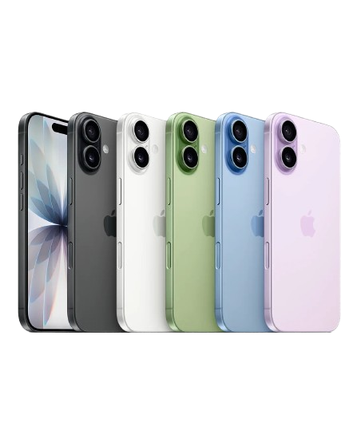

EV START TECH
Assistência Técnica & Acessórios
EV START TECH
Assistência Técnica & Acessórios
Troca de tela de iPhone na Freguesia do Ó
Tela quebrada, trincada ou sem toque? A gente troca com peça de qualidade e garantia, geralmente no mesmo dia.

Manda o modelo do seu iPhone no WhatsApp e recebe o orçamento na hora, sem compromisso.
Sinais de que a tela precisa de troca
- Vidro trincado ou estilhaçado, mesmo que o toque ainda funcione
- Manchas escuras, listras coloridas ou partes que não acendem
- Touch que não responde ou responde no lugar errado
- Mancha preta crescendo por baixo do vidro
- Tela solta ou estufando na borda do aparelho
Qual é o seu modelo?
Selecione e já chame direto no WhatsApp
Um pouco do nosso dia a dia
Aparelho aberto na bancada, peça original ou compatível de qualidade, e conferência antes de fechar. É assim que trabalhamos toda troca de tela que sai daqui.


Loja física na Freguesia do Ó
Ficamos na R. Alexandre Fuzaro, 529, Jardim Primavera. Atendemos quem vem da Freguesia do Ó, Vila Palmeiras, Limão, Casa Verde, Vila Carbone, Vila Bancária e toda a região da Av. Inajar de Souza.
Chamar no WhatsAppDúvidas sobre a troca de tela
Quanto tempo leva a troca?
Na maioria dos modelos sai no mesmo dia, muitas vezes em poucas horas. Depende do modelo e se a peça está disponível na loja no momento.
A tela nova tem garantia?
Tem sim. Toda troca de tela feita aqui sai com garantia, tanto da peça quanto do serviço.
Trocam tela de qualquer iPhone?
Atendemos do iPhone 7 e SE até os modelos mais recentes, incluindo as versões Plus e Pro Max. Manda o modelo no WhatsApp que a gente confirma a peça na hora.
Vou perder meus dados trocando a tela?
Não. É um reparo físico, os dados, fotos e aplicativos continuam no aparelho normalmente. De qualquer forma, é sempre bom manter um backup em dia.
Quanto custa?
O valor muda de acordo com o modelo do iPhone. Manda o modelo pelo WhatsApp e a gente passa o orçamento na hora, sem compromisso.